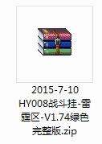
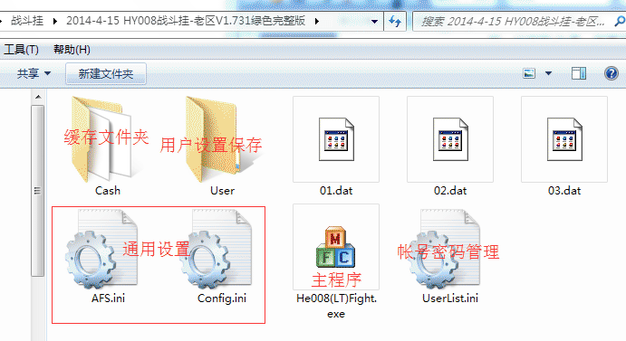
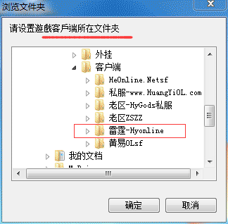
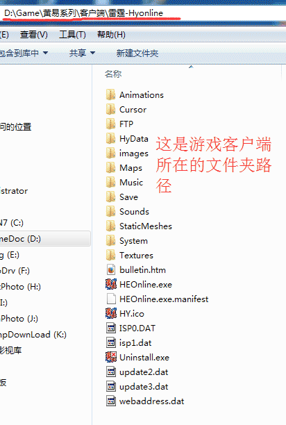
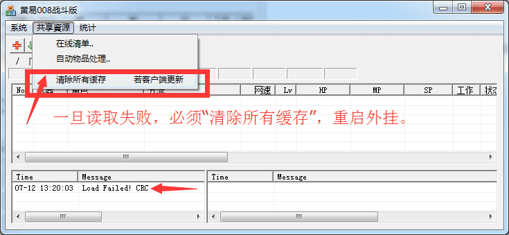
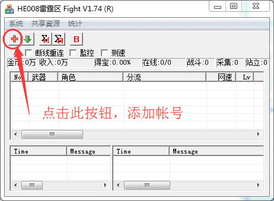
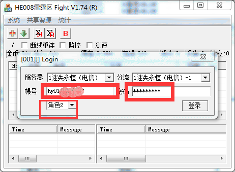

| 步骤 | 图解操作 | 说明 |
|---|---|---|
| 1.获得外挂压缩包 |  |
付费后的用户将会通过QQ得到一个压缩包（完整版），如图: 图中的文件名称中带有的版本号和日期可能有所不同 |
| 2.解压缩 |  | 必须解压缩到文件夹，不能在压缩包中直接运行。 直接解压缩到硬盘，最好不要放在C盘，不然系统重装就没了，本软件是绿色完整版，比如在D盘，就算系统重装后，直接使用就行了。 解压缩后得到下图所示文件列表： 启动外挂的图标很显眼，一看就知道了（He008(*)Fight.exe）不同版本可能名称有所不同 |
| 3.设置游戏客户端路径 |  | 首次运行会弹出一个设置路径的窗口，如图： 红线已标明了，就是要让外挂找到游戏客户端在什么地方，好读取所需要的文件， 所以，游戏客户端的路径选择应该如左图所示： |
| 4.什么是游戏路径？ |  | 左图的游戏路径是我电脑安装的地方，必须和上图选择保持一致。 |
| 5.启动外挂时要关闭游戏、其他类型外挂 |  |
启动外挂，如图： 注意：启动前必须关掉游戏客户端程序、007、旋风等外挂，否则读取文件时会失败。 |
| 6.启动失败怎么办？ |  | 一旦启动时读取文件失败，必须执行此操作。或手动删除008下的< cash >文件夹
|
| 7.添加新帐号 |  | 添加新帐号  填写好帐号、密码，选择好角色，点击“登录”。 |